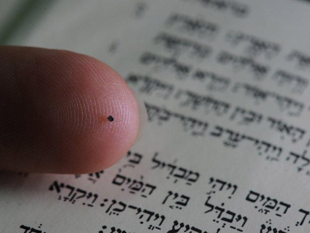

29 Aug 2026 (first published elsewhere on 9 Mar 2025)
Homer "in a nutshell": Pliny, Microart, the World's Smallest Bible and Atomic Cinema
Pliny the Elder, 1st century Roman naturalist, writer and excellent candidate for antiquity's Darwin Awards for fatally observing the eruption of Vesuvius in 79 CE from too close, is referred to as the first martyr of empirical science1. Apart from his last day of life, he is renown for a more important reason: his book Naturalis Historia, which served for centuries as the Western world’s primary source of scientific information and theory2. It is a compilation of knowledge about all of nature, in which many anecdotes and curious stories can be found.
In one chapter focused on sharpness of eyesight, he reports the following tale:
Cicero hath recorded, that the whole Poëme of Homer called Ilias was written in a peece of parchmin, which was able to be couched within a nut shell.
Pliny obviously spoke Latin,3 not 17th century English. This text is Philemon's Holland 1610 translation of Naturalis Historia. The proverbial expression in a nutshell (today used with the meaning of "concisely, in brief words") ultimately derives from this specific translation of Pliny's text. Interestingly, the same expression is used in the same way in Italian, but mantaining the original Plinian Latin words: in nuce.

Pliny's paragraph on the nut-parchment is not focused on small objects, but rather on sharpness of eyesight. It tells also of a man who could see ships from a distance of 150 km, from one side to the other of the Strait of Sicily, a certain Strabo. Strabo didn't care about the Earth's curvature. That's because he probably never existed: his Greek name is translatable as "cross-eyed" (or "Mr Squinty", as Michael Squire puts it)4 and this whole story sounds like a joke that Pliny could have taken more seriously than necessary.
The Iliad parchment wasn’t the only example of Greco-Roman microart. Pliny refers also to two specialised creators of very small objects whose names were Myrmecides5 of Myletus and Callicrates the Lacedaemonian. They used to build tiny chariots that could fit below a fly's wings. These mirabilia surely had their admirers, but Claudius Aelian, another Roman writer who also loved unusual anecdotes and collected lots of them in his books, was more critical while talking about Myrmecides and Callicrates:6
"It seems to me that a serious person will not praise any of the two - what are these tiny creations but a waste of time?"
We can't say Aelian was completelly wrong. But these wastes of time are part of human life and nature. According to Alberto Savinio
[t]he progress of civilisation can be measured through the victory of the superfluous over the necessaryand while we have no actual proof that in Roman times these nut-parchments and minichariots really existed, there have been more witnesses for such pieces of microart at least from the Early Modern era.
Some 20 years before Holland's translation of Pliny, in 1590, another Englishman, calligrapher
Peter
Bales, had created something similar to the Iliad in a nutshell, . Sadly,
Bales' Bible is not conserved today. We can only hope that nobody mistook
it for a nut and ate it.
Two millennia after Cicero and Pliny, and four centuries after Holland and Bales, in 2015, at the Technion of Haifa, Israel, a new oddity saw the light. It was a microchip with a surface area of 0.5mm square, on which the whole of the Hebrew Bible (1.2 million letters) had been laser engraved using modern nanotechnologies. If the sharpness of your eyesight is not sufficient to read through its chapters, then you can just use a scanning electron microscope with a magnification of x10,000 to read the weekly Torah portion on the Nano Bible.

But there's even more. Two years earlier, in 2013, at IBM, while doing research on atomic memory and data storage, a team of nanophysicists made this 1 minute stop-motion film by moving atoms one by one, A Boy and His Atom, a very cute and childlike story. The goal of the film was to get the team's work known, and it truly is incredible and fascinating. I myself have had my own doubts on my career choices after seeing such a cool thing. The director of the team, in the Making of, at one point jokingly states his goal:
“If I can get a thousand kids to join science, rather than to go into law school, I’d be super excited”.
One could see a hidden irony in this wish, considering that Pliny the Elder, who gave the Latin-speaking West its naturalistic and scientific basis for centuries, had studied law and was himself a lawyer.
Footnotes
- The definition protomartire della scienza sperimentale derives from Italo Calvino’s preface to the Italian edition of the first 6 books of Naturalis Historia. It can be read in the collection of essays Why Read the Classics?, in the chapter Man, the Sky, and the Elephant.↩
- https://www.britannica.com/topic/Natural-History-encyclopedic-scientific-by-Pliny-the-Elder↩
- Pliny the Elder, Naturalis Historia 7.21: in nuce inclusam Iliadem Homeri carmen in membrana scriptum tradit Cicero.↩
- Michael Squire, The Iliad in a nutshell: visualizing epic on the Tabulae Iliacae, Oxford University Press, Oxford, 2011, p. 1.↩
- Myrmecides, literally “son of ant”, is surely an appropriate name for a builder of miniatures.↩
- Claudius Aelianus, Varia Historia 1.17: These are the wonderful small works of Mirmecydes of Myletus and Callicrates the Lacedaemonian. They made chariots with four horses that could be hidden under a fly, and they engraved an elegiac distich in golden letters on a sesame seed. Another account can be read in Plutarch of Chaeronea’s Moralia, 1083d-e: It is said that the famous Lynceus could see through stones and trees; and that someone, from a lookout in Sicily, could see ships leaving the harbor of Carthage, even though they were days and nights away. The followers of Callicrates and Myrmecides are said to have created chariots small enough to be hidden under a fly’s wings, and to have engraved Homer’s verses in tiny letters on a sesame seed.↩